반응형 쇼핑몰 화면을 FastAPI · Supabase · OpenAI 상담봇으로 확장하고 Render에 배포했습니다.
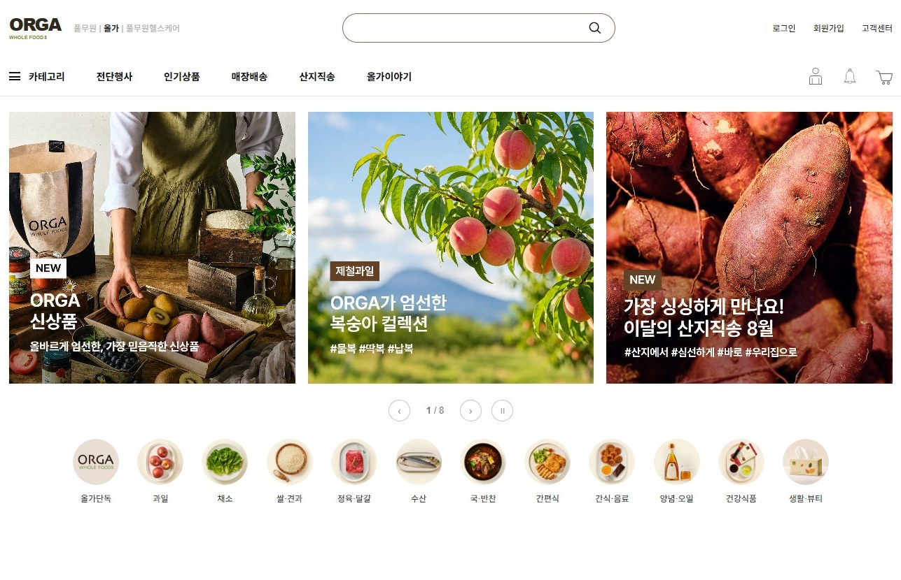
화면은 API를 먼저 호출하고, 서버가 없으면 JSON으로 대신합니다. 상품별 상세 30개와 문서 기반 상담봇을 한 주소에서 제공합니다.
무엇을 어떤 범위로 만들었고, 어떤 순서로 설명하는지 정리했습니다.
| 목표 | 반응형 쇼핑몰 화면을 만들고, 상품 데이터를 DB와 API로 옮겨 실제 서비스 구조로 확장합니다. |
| 메인 페이지 | 헤더 · 배너 슬라이더 · 카테고리 · 상품 6개 섹션(33개 카드) · 푸터 |
| 상세 페이지 | 상품 30개 각각의 상세 · 이미지 확대 · 수량 계산 · 연관 상품 · 상세 콘텐츠 |
| 서버 · DB | FastAPI 엔드포인트 7개 · Supabase 표 4개 · 상품 30개 · 섹션 연결 33개 |
| 상담봇 | 이용 안내와 상품 정보를 근거로 답변 · 횟수 제한 · 키는 서버에만 보관 |
| 배포 | Render 무료 Web Service · /health 상태 확인 · GitHub main 자동 배포 |
| 개발 | su4228-prog — 화면 구현 · 데이터 구조 · 백엔드 · 배포 |
기존 렌더링 코드를 살리고 데이터 공급원만 JSON에서 API와 DB로 바꿨습니다.
화면은 같은 데이터 모양을 사용합니다. Render에서는 API를 읽고, 서버가 없으면 기존 JSON으로 자동 전환합니다.
api.js가 실행 환경에 맞는 주소 선택Render /api/sections/{key} └▶ 카드 렌더링 정적 json/*.json └▶ 같은 카드 렌더링
상품은 한 번만 저장하고 여러 섹션에는 연결 정보만 둡니다. 가격이나 설명을 한 곳에서 수정할 수 있습니다.
products 상품 30개sections 섹션 6개section_products 카드 연결 33개products 1 ── N section_products sections 1 ── N section_products products 1 ── 1 product_details
브라우저에는 비밀 키를 보내지 않습니다. 서버가 외부 서비스와 통신하고 상담봇 호출 횟수도 먼저 제한합니다.
브라우저 ─▶ FastAPI ├▶ Supabase └▶ OpenAI 키가 프론트엔드로 전달되는 곳: 0
화면과 API를 FastAPI 한 서버에서 제공하고, 상품 데이터와 상담봇은 외부 서비스와 연결합니다.
| 구분 · 기술 | |
|---|---|
| 마크업 | HTML5 시맨틱 태그 (header · main · section · article) |
| 스타일 | CSS3 · 변수(:root) · Grid · Flex · aspect-ratio · 미디어쿼리 |
| 스크립트 | JavaScript (ES Modules import / export) |
| 데이터 | Supabase (PostgreSQL) · JSON 7개는 서버가 없을 때 쓰는 예비 데이터 |
| 인터랙션 | 배너 슬라이더(자동재생/일시정지) · 이미지 확대 렌즈 · 수량 계산 · 접이식 배송정보 |
| 서버 | Python · FastAPI · Uvicorn · Pydantic 응답 모델 |
| 상담봇 | OpenAI gpt-4o-mini · 이용 안내 문서 + 상품 목록 + 서버 계산 사실 |
| 배포 | Render 무료 Web Service · GitHub main 자동 배포 · /health |
pip install -r backend/requirements.txtcd backend && uvicorn app:app --host 0.0.0.0 --port $PORT첫 화면에서 브랜드 메뉴와 프로모션 배너, 12개 카테고리까지 한 번에 보여줍니다.
2 / 8) 실시간 표시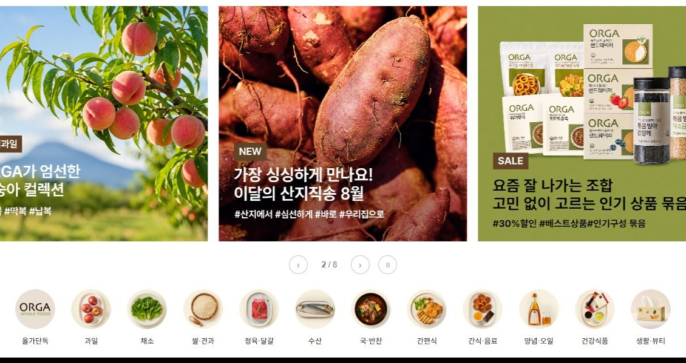
섹션마다 배경색과 카드 구성을 달리하고, 가격·할인·평점 같은 요소는 데이터가 있을 때만 표시합니다.
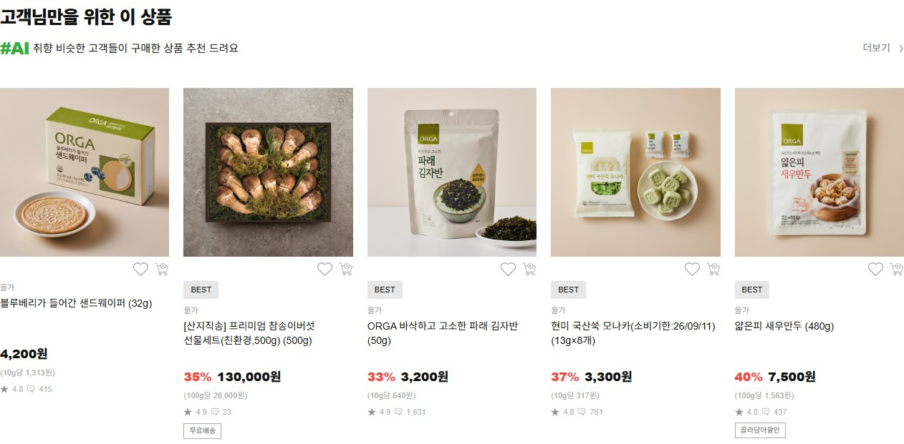
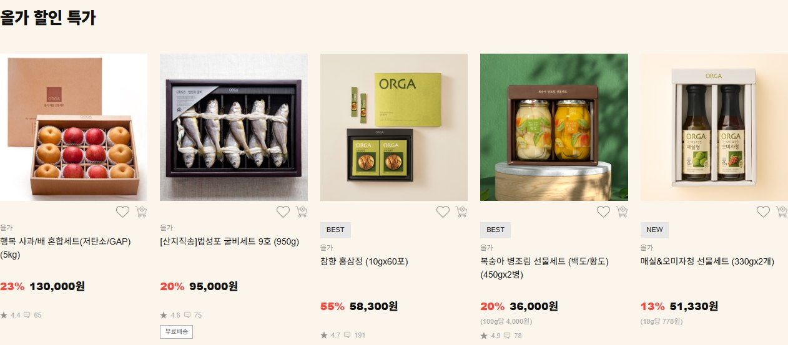
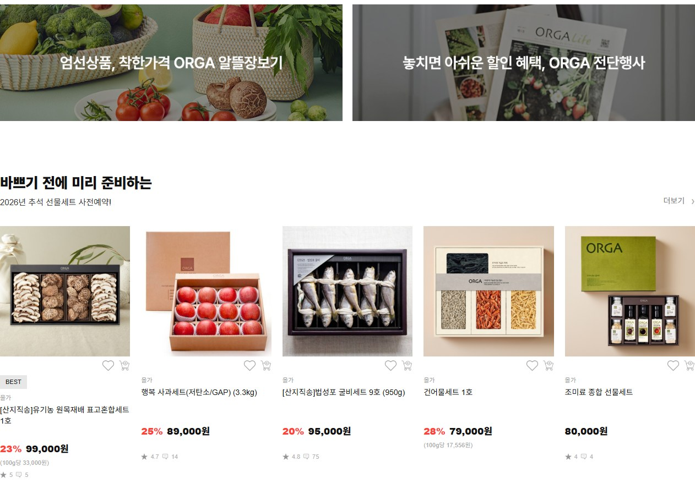
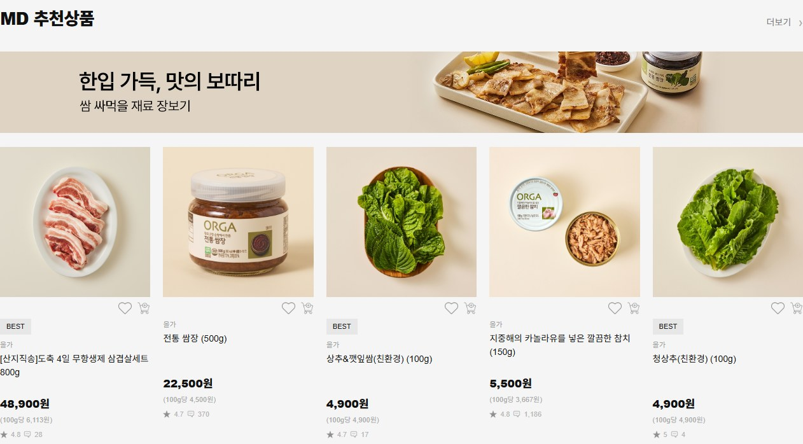
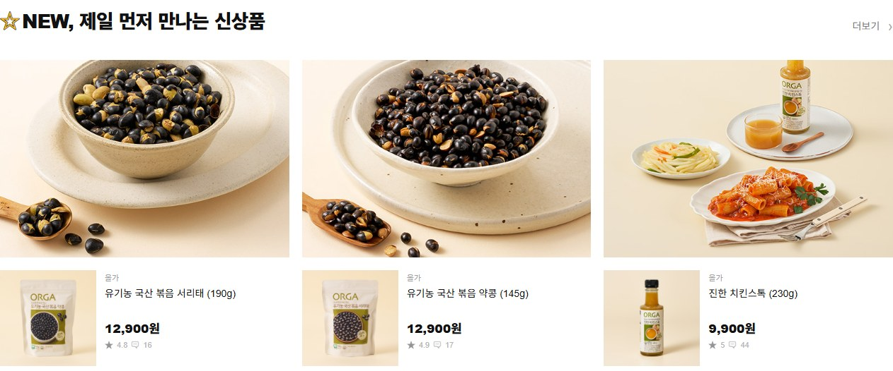
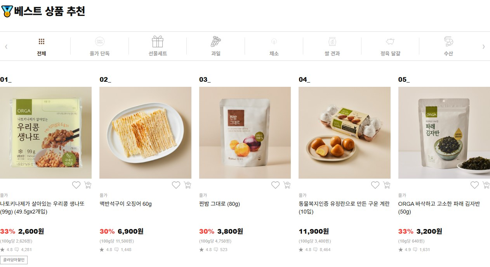
같은 화면 코드가 Render에서는 API를, GitHub Pages에서는 JSON을 읽습니다.
// js/api.js export async function loadSection(key, fallback) { const base = apiBase(); if (base !== null) { try { return await getJson( `${base}/api/sections/${key}`); } catch { console.warn("JSON으로 대체"); } } return getJson(fallback); }
// 실행 환경별 데이터 흐름 Render /api/sections/client └▶ Supabase └▶ 기존 JSON 모양 응답 GitHub Pages /api 요청 불가 └▶ json/client_products.json 두 경로 모두 같은 렌더링 함수 사용
| 요청 | 서버 응답 | 대체 파일 | 화면 결과 |
|---|---|---|---|
| sections/client | 추천 상품 5개 | client_products.json | 고객 맞춤 추천 |
| sections/discount | 할인 상품 5개 | discount_products.json | 올가 할인 특가 |
| sections/gift | 선물 상품 5개 | gift_products.json | 추석 선물세트 |
| sections/md | MD 상품 5개 | md_products.json | MD 추천상품 |
| sections/new | 신상품 3개 | new_products.json | NEW 신상품 |
| sections/best | 베스트 10개 | best_products.json | 베스트 상품 |
카드를 누르면 이동하는 상세 페이지입니다. 대표 이미지에 마우스를 올리면 확대 렌즈가 나타납니다.
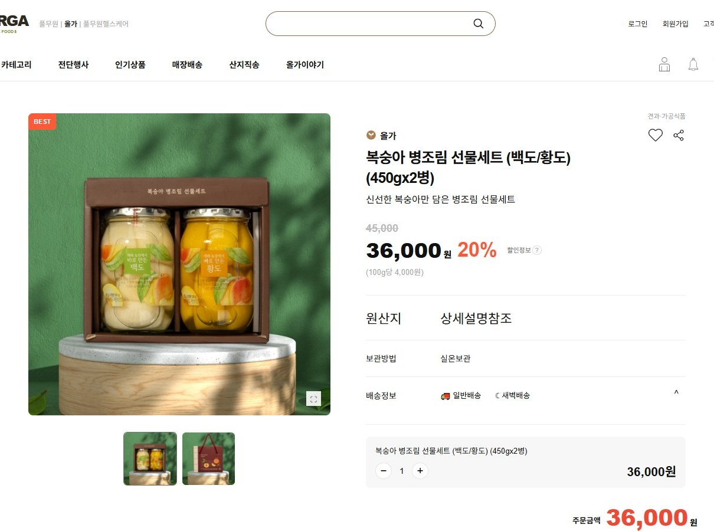
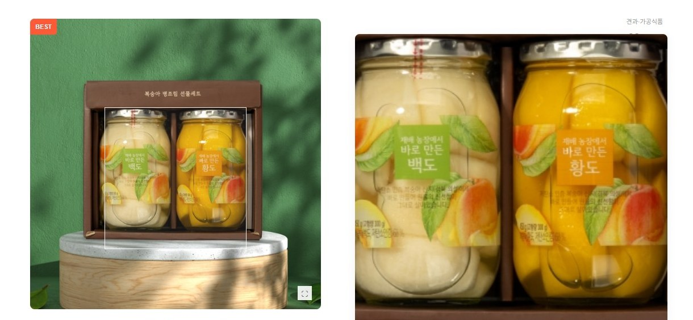
product 값에서 생성구매 직전에 필요한 정보를 접고 펼 수 있게 하고, 연관 상품 10개를 슬라이더로 보여줍니다.
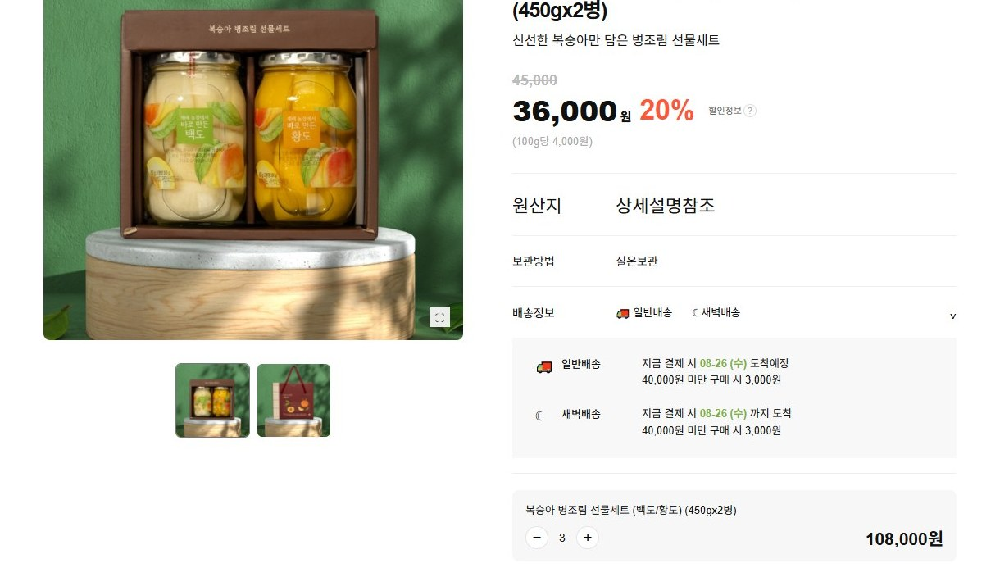
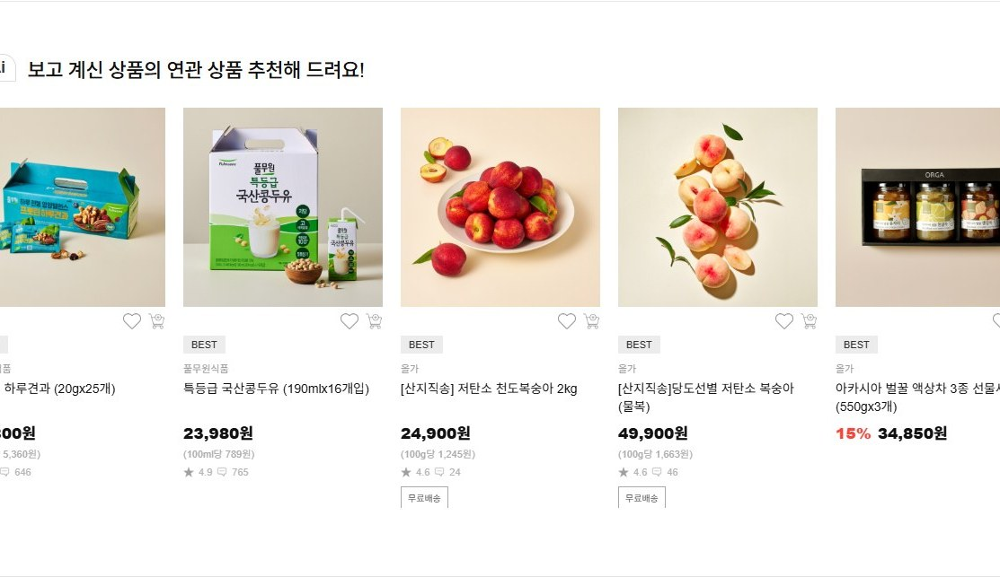
＋ / － 버튼으로 수량을 바꾸면 판매가 × 수량이 주문금액과 항목 금액에 동시에 반영됩니다. (최소 1개)
price = productPrice × quantity일반배송 · 새벽배송 도착 예정일과 배송비 기준을 max-height 전환으로 부드럽게 접고 펼칩니다.
.delivery-section.closed → max-height: 0화면 폭에 따라 5 → 3 → 2개씩 보이며, 처음과 끝에서는 이전/다음 버튼이 비활성 처리됩니다.
≤650px → 2개 · ≤1000px → 3개 · 그 외 5개Supabase 데이터를 화면이 쓰던 JSON과 같은 모양으로 돌려주어 프론트엔드 변경을 줄였습니다.
| 주소 | 역할 |
|---|---|
GET /api/sections | 섹션 6개 목록 |
GET /api/sections/{key} | 섹션 제목과 상품 카드 목록 |
GET /api/products?q= | 상품 이름과 브랜드 검색 |
GET /api/products/{id} | 상품 상세 · 연관 상품 · 탭 · 상세 블록 |
GET /api/chat/status | 상담봇 사용 가능 여부 |
POST /api/chat | 질문과 이전 대화를 받아 상담 답변 |
GET /health | Render 상태 확인 |
# backend/app.py app = FastAPI( title="ORGA Whole Foods API" ) @app.get("/api/products/{product_id}", response_model=ProductDetailResponse) def product(product_id: int): return svc.get_product(product_id) @app.get("/health") def health(): return {"status": "ok"}
상품과 섹션을 분리하고 연결 표를 두어 중복 상품을 한 곳에서 관리합니다.
| 표 | 행 | 저장 내용 |
|---|---|---|
| products | 30 | 상품 이름 · 브랜드 · 가격 · 할인율 · 이미지 · 평점 · 후기 수 |
| sections | 6 | 섹션 키 · 제목 · 표시 순서 |
| section_products | 33 | 섹션별 상품 연결과 카드 표시 순서 |
| product_details | 30 | 갤러리 · 소개 · 정보 탭 · 상세 콘텐츠 JSON |
# 관계 sections 1 │ N section_products N ─── 1 products │ 1 │ 1 product_details 같은 상품이 여러 섹션에 나와도 products에는 한 번만 저장
verify_seed.py로 원본과 DB 데이터를 비교합니다.배송 · 반품 · 적립금 · 상품 가격을 답하고, 확인되지 않은 내용은 지어내지 않도록 제한합니다.
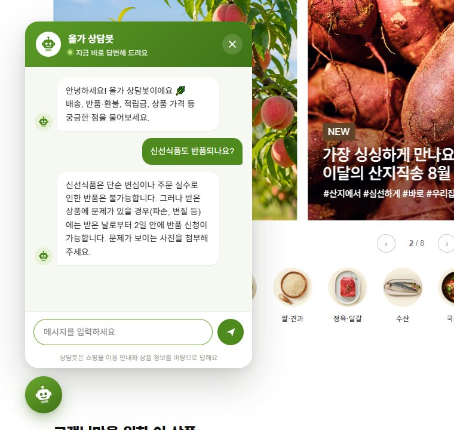
| 항목 | 구현 |
|---|---|
| 답변 근거 | 이용 안내 문서 · 상품 30개 · 서버가 계산한 가격과 순위 |
| 대화 | 이전 대화 6개까지 전달해 이어 묻기 지원 |
| 비용 제한 | 한 사람당 10분에 10회 · 사이트 전체 하루 300회 |
| 안전 | 질문 300자 · HTML 실행 차단 · 내부 오류 숨김 |
| 표시 조건 | OpenAI 키가 있고 서버 상태가 정상일 때만 버튼 표시 |
선택한 방식과 검토한 대안, 그렇게 정한 이유를 정리했습니다.
| 항목 | 채택 | 검토 대안 | 이유 |
|---|---|---|---|
| 데이터 저장 | Supabase (PostgreSQL) | JSON만 유지 | 상품별 상세 30개와 검색, 상담봇이 같은 데이터를 사용해야 해서 DB로 옮겼습니다. |
| 표 구조 | 상품 1줄 + 섹션 연결 표 | 섹션마다 상품 복사 | 여러 섹션에 나오는 상품도 가격과 설명을 한 곳에서 수정합니다. |
| 서버 | FastAPI | Node.js Express | 입력과 응답 형태 검사, /docs 자동 문서를 활용했습니다. |
| API 응답 | 기존 JSON과 같은 모양 | 새 응답 구조 | 프론트엔드 렌더링 코드를 거의 바꾸지 않고 연결했습니다. |
| 서버 장애 | JSON으로 자동 대체 | 오류 화면 | GitHub Pages 정적 버전도 같은 상품 화면을 유지합니다. |
| 상담봇 근거 | 문서 + 상품 + 계산 사실 | 모델 지식만 사용 | 순위와 가격처럼 틀리면 안 되는 내용을 서버가 먼저 계산합니다. |
| 배포 | Render 서버 하나 | 화면과 API 분리 배포 | 같은 주소에서 화면과 API가 동작해 CORS와 설정이 단순합니다. |
화면 파일과 서버 코드를 한 저장소에 두고, FastAPI가 정적 파일과 API를 함께 제공합니다.
orga_whole_food/ ├─ index.html # 메인 페이지 ├─ sub.html # 상품 상세 페이지 ├─ css/ # 공통 · 메인 · 상세 · 상담봇 ├─ js/ │ ├─ api.js # API 주소 · JSON 대체 │ ├─ 01~06_fetch_*.js # 섹션 카드 렌더링 │ ├─ sub.js # 상세 렌더링 │ └─ chat.js # 상담봇 화면 ├─ json/ · img/ # 예비 데이터 · 이미지 ├─ backend/ │ ├─ app.py # API · 화면 제공 │ ├─ services/ # 상품 · 상담봇 · 횟수 제한 │ ├─ rag_docs/ # 이용 안내 문서 │ ├─ sql/ # Supabase 표 │ └─ scripts/ # 이전 · 검증 도구 ├─ requirements.txt # 배포 의존성 연결 ├─ render.yaml # Render 설정 └─ README.md
// GET /api/products/3 { "id": 3, "hasFullDetail": true, "product": { nameLines, price, gallery, … }, "aiRecommend": [ /* 10개 */ ], "infoTabs": [ /* 5개 */ ], "detailContent": [ /* 상세 블록 */ ] }
로컬에서는 backend 폴더에서 실행하고, Render에서는 저장소 루트 기준 명령을 사용합니다.
# 저장소 복제
git clone https://github.com/su4228-prog/orga_whole_food.git
cd orga_whole_food\backend
python -m venv .venv
.venv\Scripts\python -m pip install -r requirements.txt
copy .env.example .env
.venv\Scripts\python -m uvicorn app:app --host 127.0.0.1 --port 8000
.env에는 본인 환경의 값을 직접 입력하고 GitHub에는 올리지 않습니다.
pip install -r backend/requirements.txtcd backend && uvicorn app:app --host 0.0.0.0 --port $PORT/health/health 정상 응답2026.10.20 로컬 점검 스크립트와 공개 Render 주소를 직접 열어 화면 · API · 상담봇을 확인했습니다.
| 검사 | 결과 |
|---|---|
| 공개 상태 | Render /health에서 {"status":"ok"} 응답 |
| 메인 | Supabase 기반 상품 카드 33개와 이미지 정상 표시 |
| 상세 30개 | 상품별 이름 · 상세 블록 · 연관 상품 10개 · 이미지 정상 |
| DB | 원본 JSON과 Supabase 데이터 일치 (verify_seed.py) |
| API | 섹션 · 검색 · 상세 · 잘못된 입력 처리 통과 (verify_api.py) |
| 상담봇 | 질문 22개를 3회 연속 통과 (test_chat.py) |
| 공개 상담봇 | 배포 사이트에서 “베스트 1위 상품” 질문에 실제 응답 확인 |
| 보안 | backend/.env 제외 · 추적 파일에서 실제 키 형태 없음 |
| 가로 넘침 | 1440 · 1100 · 900 · 760 · 560px에서 0 · 메인은 390px도 0 |
상세 페이지 390px 폭에서 가로 69px 넘침을 보정할 예정입니다. 데스크톱·태블릿 폭에서는 정상이며, 모바일 상세의 고정 폭 요소가 원인으로 보입니다.
| 폭 | 메인 | 상세 |
|---|---|---|
| 1440 ~ 560px | 넘침 0 | 넘침 0 |
| 390px | 넘침 0 | +69px |
잘한 점, 개선할 점, 그리고 추후 단계를 정리했습니다.
계획했던 데이터 이전, API, 상품별 상세, 상담봇, Render 배포를 모두 구현했습니다.
브라우저 │ 화면 · /api/* 요청 ▼ FastAPI on Render ──▶ Supabase (PostgreSQL) │ products · sections │ section_products · product_details └──────────────▶ OpenAI (질문할 때만)
Render 공개 주소에서 사이트 · 상품 상세 · API · 상담봇이 함께 동작합니다.
sub.html?id=… 상세 연결